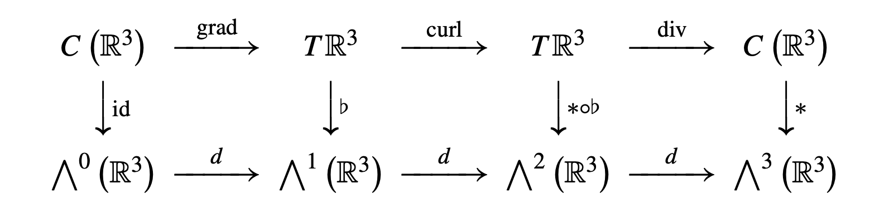
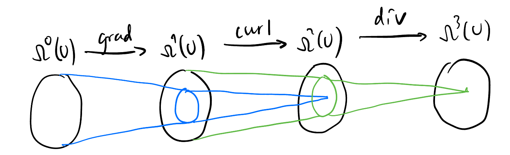
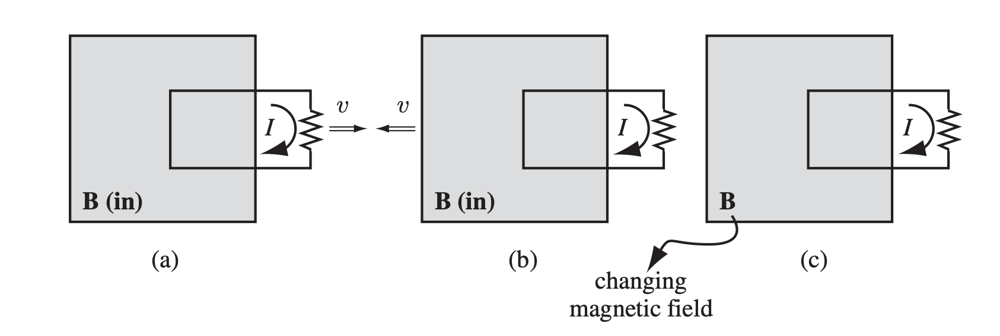
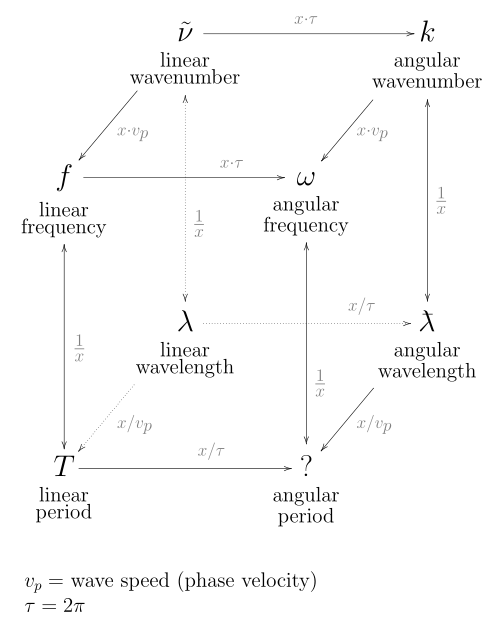

Electromagnetism 速成笔记
本笔记是本人电子科技大学格院大三《电磁场与波》课程的期末考试复习笔记, 遵循个人学习习惯与轨迹, 不保证严谨性和绝对正确性.
Vector Analysis 向量分析
Vector operations 向量运算
Mixed product 混合积: \[ \mathbf{a} \cdot (\mathbf{b} \times \mathbf{c}) = \mathbf{b} \cdot (\mathbf{c} \times \mathbf{a}) = \mathbf{c} \cdot (\mathbf{a} \times \mathbf{b}) \]
BAC-CAB rule 三叉乘 BACK-CAB 规则: \[ \begin{aligned} \mathbf{a} \times (\mathbf{b} \times \mathbf{c}) &= \mathbf{b} (\mathbf{a} \cdot \mathbf{c}) - \mathbf{c} (\mathbf{a} \cdot \mathbf{b}) \\ \nabla \times (\nabla \times \mathbf{A}) &= \nabla (\nabla \cdot \mathbf{A}) - \nabla^2 \mathbf{A} \\ \end{aligned} \]
\(\mathbf{a} \times (\mathbf{b} \times \mathbf{c})\) 的结果在 \(\mathbf{a}\) 和 \(\mathbf{b}\) 的平面内.
三叉乘操作等价于先投影 \(\mathbf{a}\) 再旋转 \(90^\circ\):

\(\nabla^2 \neq \nabla \times \nabla\): 当 \(\nabla^2\) 作用在向量场时, 约定为作用在向量场的每个分量上.
为什么引入 \(\nabla^2\) 对向量场的作用? 因为 \(\nabla^2\) 是二阶导的自然高维推广 而不是 \(\nabla \times \nabla\). 用 \(\nabla^2\) 列出的方程的每个分量一般就是二阶 PDE.
Vector fields 向量场
约定: 标量场是 \(0\)-form, 向量场是 \(1\)-form, 只考虑三维向量场 \(\omega: \mathbb{R}^3 \to \mathbb{R}^3\).
Gradient, curl, divergence 梯度, 旋度, 散度: 都可看作某种导数:「外微分算子」. 
- 旋度计算: 用 symbolic 叉乘 (掐头去尾取中间)
外微分算子的 Exact 正和性 与 Poincaré’s lemma 庞加莱引理:
Exact 正和性 \(\mathrm{d}^2 = 0\): 梯度无旋, 旋度无散. 
Poincaré’s lemma 庞加莱引理: 闭形式一定是恰当形式, 即无旋场一定是梯度场, 无散场一定是旋度场.
Potential 势函数:
- 若恰当形式 \(\alpha = \mathrm{d}\beta\), 则称 \(\beta\) 是 \(\alpha\) 的 (矢)势 (比如磁场, \(\alpha = \mathbf{B}\), \(\beta = \mathbf{A}\))
- 若恰当形式 \(\alpha = -\mathrm{d}\beta\), 则称 \(\beta\) 是 \(\alpha\) 的 (标量)势 (比如电场, \(\alpha = \mathbf{E}\), \(\beta = \varphi\))
恰当形式是不唯一的, 不同的恰当形式之间相差一个 Gauge:
- 若 \(\mathbf{B} = \nabla \times \mathbf{A}\), 则 \(\mathbf{A} + \nabla \psi\) 也是 \(\mathbf{B}\) 的磁势.
- 若 \(\mathbf{E} = -\nabla \varphi\), 则 \(\varphi + c\) 也是 \(\mathbf{E}\) 的电势.
- 不同的 \(\psi\) 和 \(c\) 称为不同的 Gauge (e.g. Coulomb gauge, Lorenz gauge).
Stokes’ theorem 广义斯托克斯定理: 即 Newton–Leibniz theorem 牛顿-莱布尼茨定理 的推广, \(\omega\) 在流形 \(M\) 边界上的积分等于 \(\mathrm{d}\omega\) 在 \(M\) 内部的积分: \[ \int_{\partial M} \omega = \int_M \mathrm{d}\omega \]
- 特例: Gauss’s 定理 和 Green’s 定理.
- Stokes’ 定理可从积分形式的 Maxwell 方程推导出其微分形式, 反之亦然.
Magnetostatics 静磁学
Conduction current 传导电流
- 因电荷运动产生的电流. 每秒通过指定截面的电荷量1 \[I = \frac{\mathrm{d}q}{\mathrm{d}t}.\]
Current density 电流密度: 每秒通过单位截面的电荷量 \[|\mathbf{j}| := \frac{I}{A}.\]
传导电流产生静磁场, 可由以下关系描述:
\[ \begin{aligned} \mathbf{B}(\mathbf{r}) &= \frac{\mu_0}{4\pi} \int \frac{\mathbf{I} \times \mathbf{\hat{r}}}{r^2} \mathrm{d}l' \quad &\text{(Biot-Savart law)} \\ \operatorname{Flow}_C (\mathbf{B}) &= \mu_0 I_{\text{enc}} \quad &\text{(Ampère's law)} \\ \mathbf{\nabla} \times \mathbf{B} &= \mu_0 \mathbf{J} + \mu_0 \varepsilon_0 \frac{\partial \mathbf{E}}{\partial t} \quad &\text{(Ampère's law)} \end{aligned} \]
Electromagnetic Induction 电磁感应
Faraday’s Law 法拉第定律
-
- Lorentz force 洛伦兹力 (「切割磁感线」): \[ \begin{aligned} \mathbf{F} &= q \mathbf{v} \times \mathbf{B} \\ &= q \mathbf{E} \\ \implies \mathcal{E} &= \oint \mathbf{E} \cdot \mathrm{d}\mathbf{l} = BLv \end{aligned} \]
- Induced electric field 感应电场: \[\operatorname{curl} \mathbf{E} = -\frac{\partial \mathbf{B}}{\partial t}.\]
Figure 1: 法拉第做的三个实验 但这两种机制都产生了 EMF, 且都可以用「磁通量的变化」来描述: \[\mathcal{E} = \operatorname{Flow}_C (\mathbf{E}) = -\frac{\mathrm{d}\Phi}{\mathrm{d}t}.\] 这个巧合直接导致了狭义相对论的出现!
Maxwell’s Equations 麦克斯韦方程组
Without magnetic monopoles 没有磁单极子
\[ \nabla \cdot \mathbf{D} = \rho_f \tag{1}\] \[ \nabla \cdot \mathbf{B} = 0 \tag{2}\] \[ \nabla \times \mathbf{E} = -\frac{\partial \mathbf{B}}{\partial t} \tag{3}\] \[ \nabla \times \mathbf{H} = \mathbf{j}_f + \frac{\partial \mathbf{D}}{\partial t} \tag{4}\]
With magnetic monopoles 有磁单极子
\[ \begin{cases} \nabla \cdot \mathbf{D} &= \rho_f \\ \nabla \cdot \mathbf{B} &= \rho_{mf} \\ \nabla \times \mathbf{E} &= -\mathbf{j}_{mf} -\frac{\partial \mathbf{B}}{\partial t} \\ \nabla \times \mathbf{H} &= \mathbf{j}_f + \frac{\partial \mathbf{D}}{\partial t} \\ \end{cases} \]
- \(\rho_{mf}\): 自由磁荷密度, \(\mathbf{j}_{mf}\): 自由磁流密度
Potential functions 势函数的麦克斯韦方程组
我们希望通过引入势函数来将 Maxwell 方程变成只有两个.
由 \(\mathbf{B}\) 的无散性 (Equation 2) 可引入磁势 \(\mathbf{A}\), 代入到 Equation 3 由 \(\mathbf{E}+\frac{\partial \mathbf{A}}{\partial t}\) 的无旋性可引入电势 \(\phi\). 则中间两个式子变成了: \[ \begin{cases} \nabla \cdot \mathbf{B} &= 0 \\ \nabla \times \mathbf{E} &= -\frac{\partial \mathbf{B}}{\partial t} \end{cases} \implies \boxed{ \begin{cases} \mathbf{B} &=: \nabla \times \mathbf{A} \\ \mathbf{E} &=: -\frac{\partial \mathbf{A}}{\partial t} - \nabla \varphi \end{cases} } \tag{5}\] Equation 5 始终成立, 与 Gauge 无关.
用 Equation 5 将 Equation 1 和 Equation 4 的 \(\mathbf{D}\) 和 \(\mathbf{H}\) 替换掉, 得到 D’Alembert 方程: \[ \begin{cases} \nabla \cdot \mathbf{D} &= \rho_f \\ \nabla \times \mathbf{H} &= \mathbf{j}_f + \frac{\partial \mathbf{D}}{\partial t} \end{cases} \implies \begin{cases} \epsilon \mu \frac{\partial^2 \varphi}{\partial t^2} - \nabla^2 \varphi &= \frac{1}{\epsilon} \rho_f \\ \epsilon \mu \frac{\partial^2 \mathbf{A}}{\partial t^2} - \nabla^2 \mathbf{A} &= \mu \mathbf{j}_f - \nabla (\nabla \cdot \mathbf{A} + \epsilon \mu \frac{\partial \varphi}{\partial t}) \end{cases} \tag{6}\]
- D’Alembert 算子 是 Minkowski 时空 上的 Laplace 算子2: \[\boxed{\Box^2 \equiv \nabla^2 - \epsilon \mu \frac{\partial^2}{\partial t^2}}\]
Equation 6 过于魔怔, 由 Section 1.2 知: 我们可以通过 Gauge 变换 来简化方程: \[ \begin{aligned} A \to A + \nabla \psi \\ \varphi \to \varphi - \frac{\partial \psi}{\partial t} \end{aligned} \]
Coulomb gauge 库伦规范: \(\nabla \cdot \mathbf{A} = 0\), Equation 6 变为: “rubbish” ╯°Д°）╯ \[ \begin{cases} \Box^2 \varphi = -\frac{1}{\epsilon} \rho_f \\ \Box^2 \mathbf{A} = \nabla (\epsilon \mu \frac{\partial \varphi}{\partial t}) - \mu \mathbf{j}_f \end{cases}, \quad (\nabla^2 \psi = 0) \]
Lorenz gauge 洛伦兹规范3: \(\nabla \cdot \mathbf{A} + \epsilon \mu \frac{\partial \varphi}{\partial t} = 0\), Equation 6 变为 (\(4\) 维 Poisson 方程) : “democratic” \(≧▽≦)/ \[ \boxed{ \begin{cases} \Box^2 \varphi = - \frac{1}{\epsilon} \rho_f \\ \Box^2 \mathbf{A} = - \mu \mathbf{j}_f \end{cases}, \quad (\Box^2 \psi = 0) } \tag{7}\]
Source-free Maxwell’s equations 无源麦克斯韦方程组
\[ \begin{cases} \nabla \cdot \mathbf{D} &= 0 \\ \nabla \cdot \mathbf{B} &= 0 \\ \nabla \times \mathbf{E} &= -\frac{\partial \mathbf{B}}{\partial t} \\ \nabla \times \mathbf{H} &= \frac{\partial \mathbf{D}}{\partial t} \\ \end{cases} \tag{8}\]
Equation 8 后面两个是经典的两个变量的耦合方程, 显然他的解是波动的 (有源的情况也是波动的) , 可用 \(4\) 维的 Laplace 方程描述 (Equation 7 也可以): \[ \boxed{ \begin{cases} \Box^2 \mathbf{E} = 0 \\ \Box^2 \mathbf{H} = 0 \\ \end{cases}, \quad \begin{cases} \Box^2 \varphi = 0 \\ \Box^2 \mathbf{A} = 0 \\ \end{cases} } \]
- 神在真空中说「要有光」: \[ c = \frac{1}{\sqrt{\epsilon_0 \mu_0}}. \]
Phasor representation 相量麦克斯韦方程组
Time-harmonic 时谐波: 固定空间的任意一点, 这一点的 \(\mathbf{E}\) 和 \(\mathbf{H}\) 的三个分量都是时间的正弦函数.
- 没有说空间上是周期性的!
- Phasor 相量:
- 固定角频率 \(\omega\) 的正弦波集合 在向量空间的意义上 同构于复数域 \(\mathbb{C}\), 对应的复数称为 Phasor 相量
- 为何同构? 每个正弦波只与初始状态有关, 每个初始状态与一个复数一一对应.
- 为何固定角频率? 因为很多系统 (RC 电路, 弹簧振子, etc.) 在正弦输入下所有的物理量 (电压, 电流, 位移, 速度, etc.) 时间上一定是同频的.
- 相量 \(Ae^{j\theta_0}\) 中没有时间信息!
- 对于时谐 EM 波, 我们只关心初始状态, 即相量场: \(\tilde{\mathbf{E}}: \mathbb{R}^3 \to \mathbb{C}^3\).
Phasor Maxwell 方程组 \[ \begin{cases} \nabla \cdot \mathbf{D} &= \rho_f \\ \nabla \cdot \mathbf{B} &= 0 \\ \widetilde{\nabla \times \mathbf{E}} &= -j \omega \tilde{\mathbf{B}} \\ \widetilde{\nabla \times \mathbf{H}} &= \tilde{\mathbf{j}}_f + j \omega \tilde{\mathbf{D}} \\ \end{cases} \tag{9}\]
- Phasor representation 只是 Maxwell 方程组在「时谐」下的特例4.
- 时谐波的情况下源项 \(\mathbf{j}\) 一定也是时谐的.
- Claim: 若 \(\mathbf{E}\) 是时谐的, 则 \(\nabla \times \mathbf{E}\) 也是时谐的.
Complex permittivity 复介电常数 \(\epsilon_c\)
动机: 与阻抗 \(Z\) 的动机类似5 \[ \begin{aligned} \widetilde{\nabla \times \mathbf{H}} &= \tilde{\mathbf{j}}_f + j \omega \epsilon \tilde{\mathbf{E}} \\ \xRightarrow[]{\tilde{\mathbf{j}}_f = \sigma \tilde{\mathbf{E}}} \widetilde{\nabla \times \mathbf{H}} &= j \omega \epsilon_c \tilde{\mathbf{E}} \\ \end{aligned} \]
\(\epsilon_c\) 与频率有关: \[\epsilon_c = \epsilon - j \frac{\sigma}{\omega}.\]
Harmonic Waves 谐波
Wave parameters 波参数
EM 波并不都是 Harmonic 的. 可以在空间上周期, 也可以在时间上周期.
谐波在 「空间」 和 「时间」 都是周期性的振动, 怎么描述这种振动的快慢呢:
单位长度 (或 时间) 内振了几下.
- (linear) wave number 波数 \(\tilde{\nu}\): \(1\text{ m}\) 内振了几下.
- frequency 频率 \(f\): \(1\text{ s}\) 内振了几下.
振一下花了多少长度 (或 时间).
- wavelength 波长 \(\lambda\): 振一下占了多少米.
- period 周期 \(T\): 振一下花了多久.
以上二者度量方法相反, 显然数值上互为倒数: \(k = 1/\lambda, f = 1/T\).
角度的世界: 周期性的东西可以很自然的 wind up to 一个圆上, 度量方式也从「振了几下」变成了「转了多少度」. 每振一下对应 \(2\pi\). 所以以上四个概念通通可翻译成角度世界的度量: 乘 \(2\pi\).
- angular wave number 角波数 \(k\), angular frequency 角频率 \(\omega\), angular wavelength 角波长 \(\bar{\lambda}\), angular period 角周期 \(\bar{T}\).
- \(\cos\) 里面 还有 \(e\) 指数 上的量 就是角度世界的生物, 现实世界的量 (\(\tilde{\nu}, f, \lambda, T\)) 不允许不乘 \(2\pi\) 出现在这些地方. (\(\sout{\cos (ft)}\), \(\sout{e^{j \tilde{\nu} x}}\))

References
Footnotes
这不是 \(I\) 的定义! 国际上用力定义了电流, 再用电流定义了电荷量.↩︎
有地方也省略平方, 或定义为相反数 (sign convention)↩︎
此 Lorenz 非彼 Lorentz (↩︎
但由于 Fourier 变换, 仅仅考虑这种特例已经足够了 (“faithfully”).↩︎
个人感觉应该换一个名字 (比如「耦合系数」), 因为「介电常数」已经被定义为 \(\mathbf{E}\) 和 \(\mathbf{D}\) (电-电) 的关系, 而这里是 \(\mathbf{E}\) 和 \(\mathbf{H}\) (电-磁) 的关系, 不像 阻抗 和 电阻 都是 \(V\) 和 \(I\) 的关系.↩︎